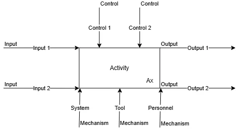
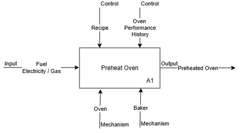
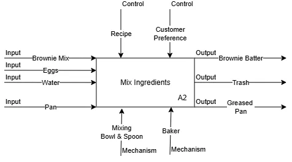
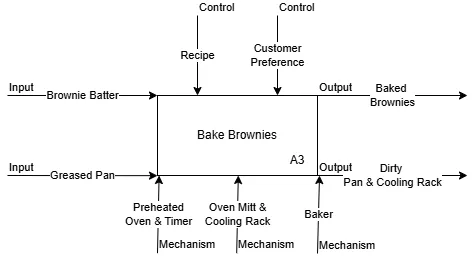
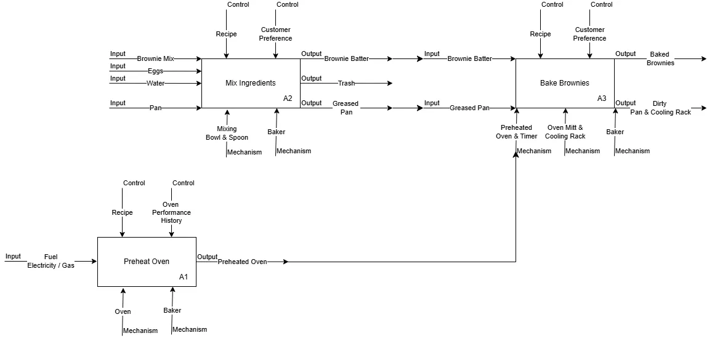

To see the forest and the trees, you develop the capability to step back and see the big picture, while simultaneously being able to zoom in and observe the trees. This series of articles will teach some practical things that will help you to cultivate this skill.
In Part I we introduced the Context Diagram, the highest view of any process, labeled Level 0 (L0), and the four arrows that define its boundaries: Inputs, Controls, Outputs, and Mechanisms (ICOMs). In Part II we learned how to decompose that context into an Activity Node Tree, breaking the process into three to six activities at each level until you have the depth your purpose requires.
Now it is time to take the next step. In Part III we apply the ICOM framework not just to the Context Diagram, but to every activity node in the tree. This is where the method transforms from a documentation framework into a diagnostic tool.
Every Activity Tells Its Own Story
In Part I, ICOMs defined the boundary of the entire process at the context level. But think about what an Activity Node Tree really is: it is a hierarchy of smaller processes nested inside a larger one. Every box in that tree, A1, A2, A2.3, A2.3.1, is itself a mini-process. It has something flowing into it, something governing it, something it produces, and something enabling it to execute.
This means every activity deserves its own ICOM analysis.

Every activity node in the decomposition tree has the same structure as the Context Diagram, its own Inputs, Controls, Outputs, and Mechanisms.
When you apply ICOMs at every node, three things happen:
- You discover the real inputs and outputs of each activity, not the global inputs and outputs of the whole process, but the specific materials, information, or decisions that each individual activity requires and produces.
- You trace the flow of value through the process, because the output of one activity almost always becomes an input or mechanism for the next. Following that flow reveals how the process actually works, or fails to work.
- You identify gaps, places where an output is produced but nobody receives it, where an activity is expected to run but has no mechanism assigned to it, or where a team is operating without any governing controls.
The Flow Between Activities
One of the most important things the ICOM framework reveals when applied across the entire Activity Node Tree is how activities connect to each other.
The output of one activity does not simply disappear, it has to go somewhere. It becomes one of three things for a downstream activity:
An Input, it is consumed or transformed in the next step.
A Control, it becomes a standard or condition that governs how later work is executed.
A Mechanism, it becomes a tool or enabling resource that makes later work possible.
When you can trace these connections cleanly and explicitly, the process is well-understood. When you cannot, when an output is produced but the next activity does not acknowledge receiving it, you have found a handoff gap. Those gaps are where quality breaks down, work gets dropped, and teams blame each other instead of the process.
Application: Baking Brownies, ICOMs at Every L1 Node
Let's return to the Baking Brownie process. In Part II we identified three high-level activities at L1:
Now let's apply ICOMs to each activity individually, moving from the forest view down to the level of each tree.
A1, Preheat Oven

- InputFuel, electricity or gas consumed by the oven to reach temperature
- ControlsRecipe (specifies required temperature); Oven Performance History (does this oven run hot or cool?)
- OutputPreheated Oven, the oven has reached the correct baking temperature
- MechanismsOven (the machine executing the activity); Baker (who initiates, monitors, and verifies)
Notice how precisely we name the output: not "the oven is on", but "Preheated Oven." That precision matters. It defines exactly what this activity must deliver before the next step can begin. Also notice that Oven Performance History is a real-world control: experienced bakers know their oven's quirks and adjust accordingly, this is tacit knowledge made explicit.
A2, Mix Ingredients

- InputsBrownie Mix, Eggs, Water, Pan, all consumed or transformed by this activity
- ControlsRecipe (specifies proportions and mixing method); Customer Preference (nut allergies, add-ins, consistency preferences)
- OutputsBrownie Batter (primary); Trash, egg shells, packaging (waste output); Greased Pan (the pan is prepped here and flows to A3)
- MechanismsMixing Bowl & Spoon; Baker
The inputs to this activity, Brownie Mix, Eggs, and Water, are consumed and transformed. When A2 is complete, these individual ingredients no longer exist in their original form. They have become something new: Brownie Batter. Note also the three outputs. The primary output (Brownie Batter) flows forward. The secondary output (Trash) exits the process. And the Greased Pan, prepped during this step, flows directly to A3 where it will be needed.
A3, Bake Brownies

- InputsBrownie Batter (from A2); Greased Pan (from A2)
- ControlsRecipe (baking time and temperature); Customer Preference (final product requirements)
- OutputsBaked Brownies (primary); Dirty Pan & Cooling Rack (waste/byproduct output)
- MechanismsPreheated Oven & Timer (oven is ready from A1); Oven Mitt & Cooling Rack; Baker
Look carefully at A3's inputs and mechanisms. Both of its inputs came from A2, the Brownie Batter and the Greased Pan. And its primary mechanism, the Preheated Oven, was produced by A1. A3 cannot execute without the upstream work of A1 and A2 being completed correctly. Those dependencies are now explicit, not assumed.
Seeing the Flow
Now let's step back and look at all three activities together. The connected diagram below shows the full L1 process, with the cross-activity flows that link them.

The L1 Baking Brownies process, ICOMs at every node, with cross-activity flows made explicit.
The two critical cross-activity flows
A1 → A3: The Preheated Oven is the output of Preheat Oven and a mechanism for Bake Brownies. The oven is not consumed by baking, it enables it. A3 cannot start until A1 has delivered this output.
A2 → A3: Brownie Batter and Greased Pan are outputs of Mix Ingredients and inputs to Bake Brownies. They are consumed and transformed by the baking. Without them, A3 has nothing to bake.
The three activities do not operate in isolation, they are a network of dependencies. Preheat Oven and Mix Ingredients must both succeed before Bake Brownies can begin. If either upstream activity fails to produce its output, the downstream activity breaks. That is not common sense, that is a documented, traceable structural dependency.
The Diagnostic Power
Why does this matter beyond brownies? In real business processes, activities are rarely this clearly connected. Teams receive work from upstream without knowing exactly what form it should arrive in. They produce outputs without knowing who needs them or in what format. They execute activities without documented controls, relying on the expertise of specific individuals rather than defined standards. And sometimes activities appear in process documents with no mechanism assigned to them at all: the step was identified, but nobody owns it.
When you apply ICOMs to every activity node, these gaps become visible. Ask these questions at every node:
Input Gap
Can we clearly name what this activity receives? If not, the handoff from upstream is undefined, and the activity is operating on assumptions.
Control Gap
What governs this activity? If the answer is "whoever is doing it decides," there is no standard, and no consistency when that person is unavailable.
Output Gap
Can we clearly name what this activity produces, and who receives it next? If not, value may be getting produced and never collected by the next step.
Mechanism Gap
What enables this activity to execute, tools, systems, or people? If the answer is unclear, the activity cannot be reliably staffed or resourced.
A process with well-defined ICOMs at every node is a process you can manage, improve, and hand to someone new. A process without them is institutional knowledge locked inside the heads of whoever happens to be doing the work today.
In Summary
Applying ICOMs at every activity node in the decomposition tree transforms your process model from a structural diagram into a living diagnostic. You are no longer just documenting that activities exist, you are documenting what each activity needs to operate, what governs its execution, what it produces, and what enables it. And by tracing the flows between activities, you reveal the hidden connections, and hidden gaps, that determine whether a process succeeds or fails in practice.
In Part II we learned to build the Activity Node Tree. In Part III we have learned to instrument it with ICOMs. The forest now has structure, and the trees now have context.
But there is one more dimension that the ICOM framework alone cannot capture: accountability. ICOMs tell you what flows through the process, what governs it, and what enables it. They do not tell you who is responsible for providing the inputs or who receives and depends on the outputs. Identifying that accountability, the suppliers who provide and the customers who receive, is the subject of Part IV.